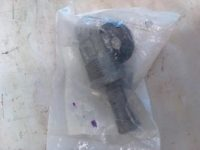
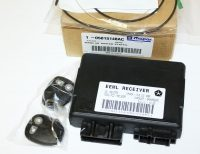
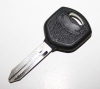

Lock Cylinders / Keys
10 parts Out of stock
Out of stock1992 - 1994 Dodge Viper RT/10 Key Fob Transmitter - 04469341
Part # 4469341
$165.00

Out of stock1995 - 2010 Dodge Viper RT/10, GTS, and SRT10 Deck Lid Lock Cylinder - 04778147
Part # 4778147
$46.00

1996 - 2002 Dodge Viper Key Fob Transmitter - 04865431AA REMOTE
Part # 4865431AA
$179.00

Out of stock1996 - 2002 Dodge Viper Keyless Entry Alarm Module w/Key Fobs - 05015148AC
Part # 5015148AC 4848832AG
$415.00
 Out of stock
Out of stock1997 - 2000 Dodge Viper EXPORT Key Fob Transmitter - 04848151
Part # 04848151
$249.99

2003 - 2010 Dodge Viper SRT10 Deck Lid Key Cylinder Bracket 04865876AA
Part # 04865876AA
$18.00

2003 - 2013 Dodge Viper SRT10 Ignition / Door Key Blank - 05102103AA
Part # 5102103AA
$199.00
Out of stock
2003-2010 Dodge Viper SRT10 Keyless Entry Remote Transmitter - 04602260AD
Part # 4602260AD
$84.00

Key, Sneaky-Pete, specify RED or BLUE
Part # 4883828AA
$195.00

TAKE OUT! 1992 - 1994 Dodge Viper RT/10 Keyless Entry Module - 04759220 USED
Part # 04759220
$300.00